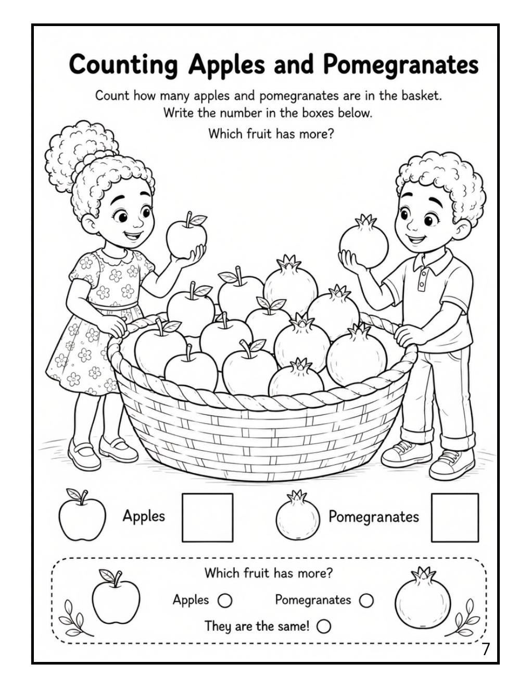
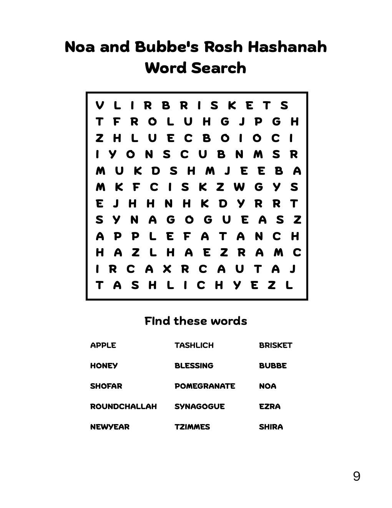
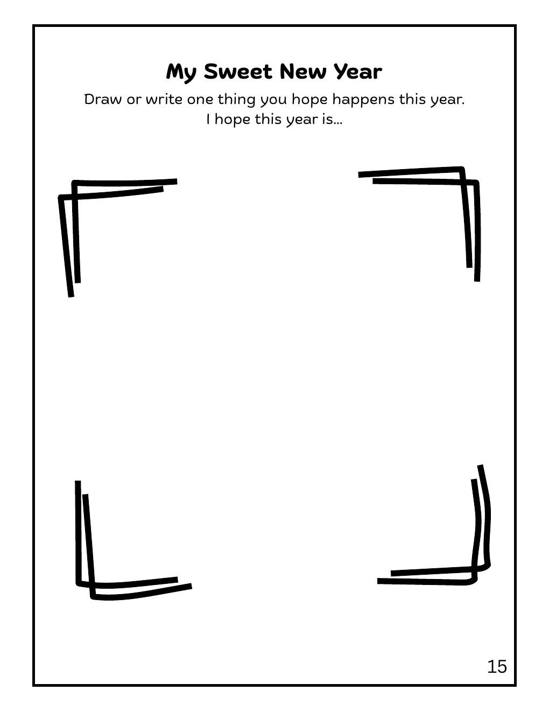
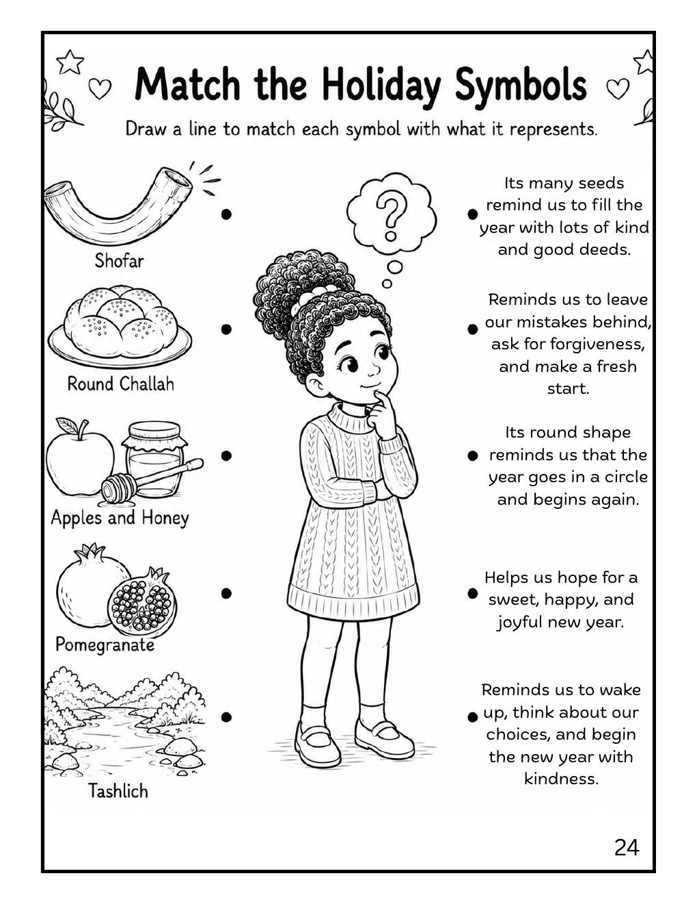

Color · Learn · Play
Rosh Hashanah + Yom Kippur
Coloring + Activity Book
A Jewish High Holidays coloring book for kids ages 3–8 with coloring pages, word searches, holiday traditions, and learning activities.
Join Noa, Bubbe, Ezra, and Shira as they discover the traditions of Rosh Hashanah and Yom Kippur through stories, coloring pages, and activities that encourage kindness, gratitude, forgiveness, and family traditions.

Inside the activity book
Learn through coloring, puzzles, and reflection
The book combines simple holiday explanations with coloring pages and activities children can complete independently or with an adult.




What children explore
High Holiday traditions in an age-appropriate format
Rosh Hashanah: apples and honey, round challah, pomegranates, the shofar, Tashlich, and fresh starts.
Yom Kippur: reflection, apology, forgiveness, fasting, the shofar, and break-fast.
Activities: coloring pages, counting, word searches, drawing prompts, matching activities, and reflective sentence starters.
Social-emotional themes: kindness, good choices, gratitude, repair, and trying again.